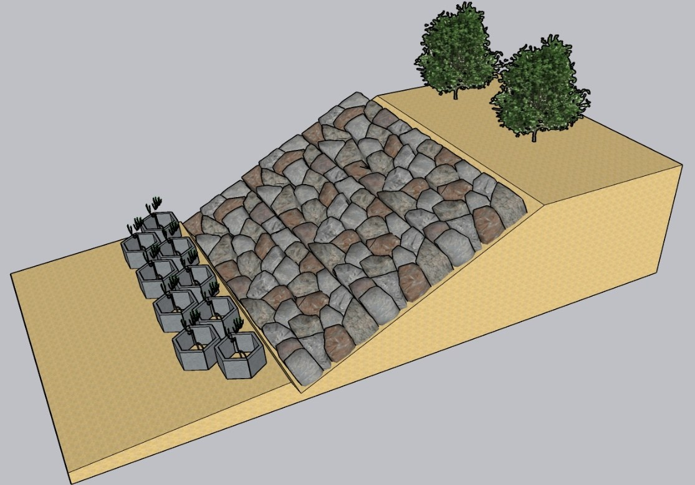
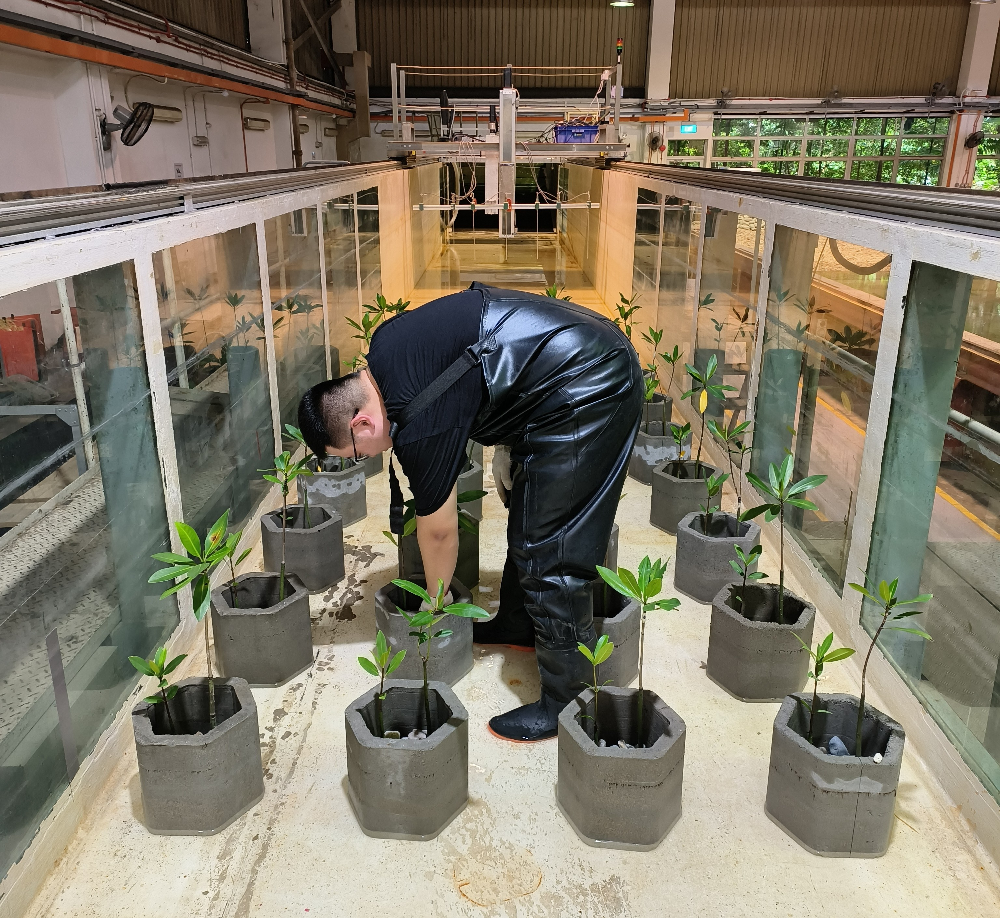

Hybrid coastal defence
Concrete planters provide immediate mechanical shelter while mangrove seedlings establish. Future work expands to seagrass-perched beaches and physical breakwater + vegetation systems.
Laboratory evidenceA grey-green coastal defence study testing how concrete planters, mangrove seedlings, seagrass-perched beaches, and breakwater-vegetation systems can attenuate waves, shelter vegetation, and inform practical design guidelines for Singapore shorelines.
Executive summary
The project develops evidence and design guidance for hybrid shore-protection systems that combine engineered structures with nature-based solutions. The current laboratory evidence shows meaningful wave attenuation and seedling protection, while also identifying local-flow risks that must be managed in deployment.
Concrete planters provide immediate mechanical shelter while mangrove seedlings establish. Future work expands to seagrass-perched beaches and physical breakwater + vegetation systems.
Laboratory evidenceTests cover extreme storm-like solitary waves, more routine periodic waves, and current-flow conditions to evaluate robustness under changing coastal conditions.
Objectives and scopeThe research links wave transmission to planter geometry, submergence, spacing, and array density, creating a route from laboratory measurements to design criteria.
practical guidanceIvestigation on Mangrove-revetment robustness and wave attenuation/sedimentation are complete. Seagrass-perched beach and design-guideline work are ongoing.
progress untill May 2026Research questions
The project is framed around practical questions that matter for deployable hybrid coastal protection: robustness, climate-change resilience, quantifiable performance, and design/operations guidance.
How can hybrid solutions remain mechanically robust under wave and current forcing?
How can performance be assessed under sea-level rise and extreme scenarios?
How can wave attenuation and reduced coastal-process impacts be measured and predicted?
What planning guidelines, design criteria, and operating procedures are needed for deployment?
Experimental approach
Laboratory experiments at NUS facilities and planned work with natural vegetation and seawater at St John’s Island support a stepwise path from physical testing to design models.
Vary planter size, height, submergence, lateral spacing, longitudinal spacing, density, and the presence or absence of seedlings.
Generate solitary waves, regular waves, and flow conditions to measure transmission, reflection, velocity, and turbulence patterns.
Evaluate seedling loading, local flow acceleration, downflow inside planters, wave diffraction near vegetation edges, and possible scour hotspots.
Develop empirical and physics-based relationships that support hybrid nature-based design criteria and future deployment decisions.



Research findings
Across solitary and periodic wave tests, the hybrid mangrove-planter system attenuates waves and shelters seedlings. The same tests also show that local turbulence, sediment resuspension, and resonance risks require careful layout design.
Under regular waves, seedlings contributed an estimated 1–3% of the planter contribution because young seedlings have a relatively small frontal area.
Reported transmission coefficients under solitary-wave conditions indicate that the hybrid system reduces incoming wave height while maintaining small reflection.
Concrete planters reduce hydrodynamic forces on seedlings, improving survival potential during the fragile establishment stage.
At shallow water depth, the wave decay caused by the hybrid solution is more significant than that at deep water depth. Thus, the planter height can be one of the important design parameters
The impact of the planter deployemnt on attenuating wave energy needs more investigation. Under solitary wave conditions, the arrangement of the planters has minor effect on the wave decay.The spacings between planters also require input from the knowledge of seedling cultivation.
The presence of planters has chenged its nearby flow field, which can reduce the hydrodynamic force on the mangrove seedling. However, the accelerating flow close to the edge of planter increase the possibility of sedimentation erosion.
Design translation
The project translates laboratory observations into practical planning considerations for hybrid shoreline protection, focusing on geometry, spacing, vegetation arrangement, and operational robustness.
Design guidance considers planter height, lateral spacing, longitudinal spacing, row density, and how hybrid units are arranged relative to the shoreline.
Planters are evaluated as protective elements that help shelter young mangrove seedlings during the fragile early establishment stage.
Wave attenuation, reflection behaviour, and local flow response are considered together when assessing hybrid-system performance.
The work supports future guidance on where hybrid systems may be suitable and what layout choices need careful engineering review.
Visual evidence
The project investigate the performance of the hybrid solution through laboratory experiments and field study.


Project progress
Laboratory experiments on mangrove-planter performance under periodic and solitary waves are complete. Preparations for seagrass-perched beach and continuous wave tests are underway, with no delays currently foreseen.
Impact and benefits
Beyond performance metrics, the experiments reveal design trade-offs that can make hybrid systems safer, more predictable, and more useful for operational coastal protection.
Hybrid planters dissipate wave energy and reduce forces on seedlings, creating an adaptive, scalable grey-green coastal protection concept.
Results separate the roles of drag-induced dissipation, vortex-induced dissipation, wave reflection, array density, and local acceleration near edges.
The project establishes relationships linking wave transmission to planter geometry, submergence depth, and array density, supporting future engineering guidelines.
People and collaborators
The project is led by National University of Singapore with co-investigators, researchers, and collaborators spanning academia, government-linked research, and coastal engineering practice.
National University of Singapore
National University of Singapore
Nanyang Technological University
Tropical Marine Science Institute, NUS
National University of Singapore.
National University of Singapore.
National University of Singapore.
Collaboration interest includes DMC, Deltares, and Circrete; broader collaborators include TCOMS, MIT, Deltares, and Tulane University.
Next stage
Upcoming work will close gaps around seagrass-perched beaches, breakwater-vegetation hybrid systems, and design-guideline development.